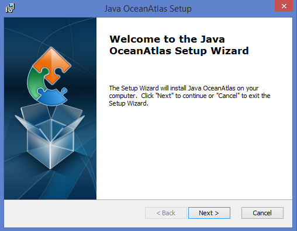

Java OceanAtlas Application
Windows Installation Instructions
Installation
After downloading, just double-click installer icon to begin installation process:

You will be presented with a series of dialogs to guide you through the installation process:

Select an installation folder if different than the default:

Credits Credentials